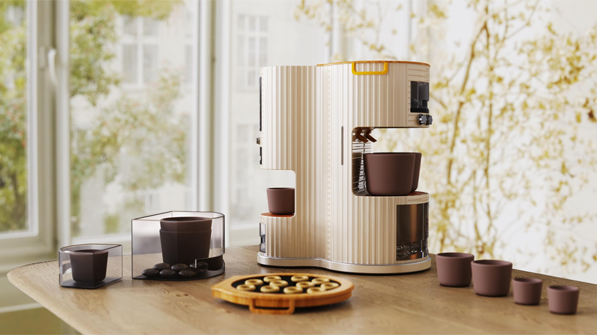
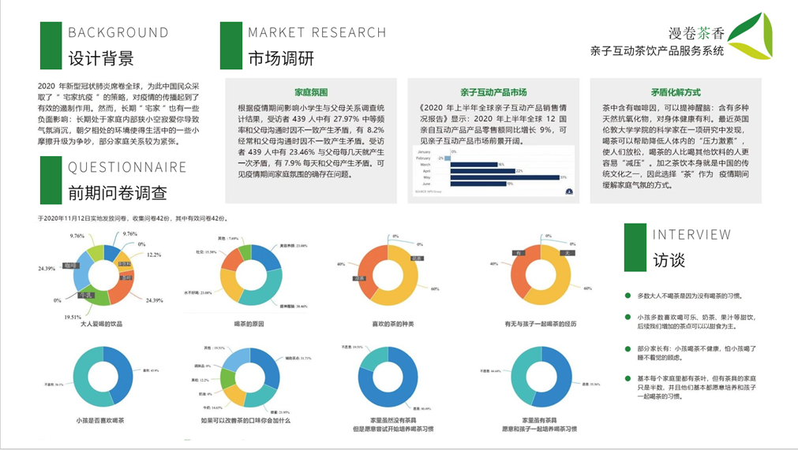
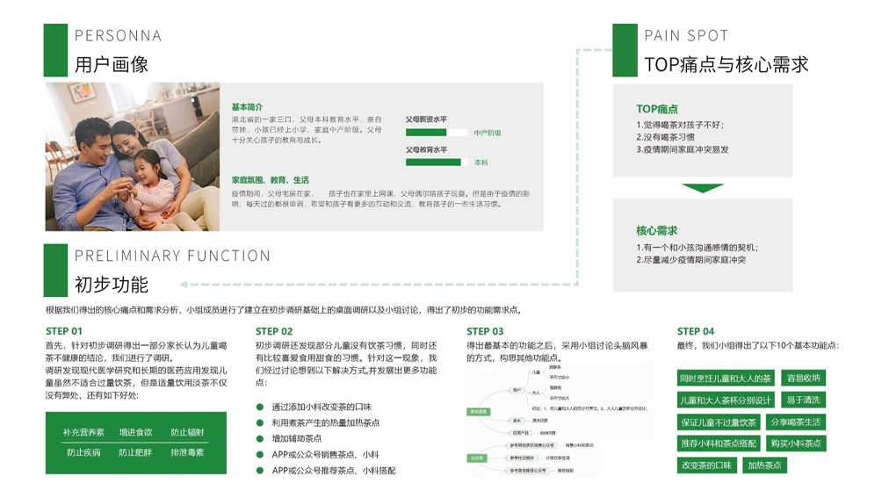
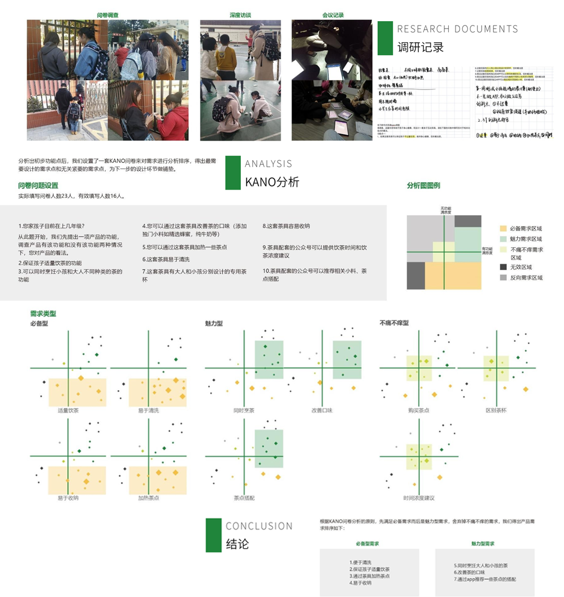
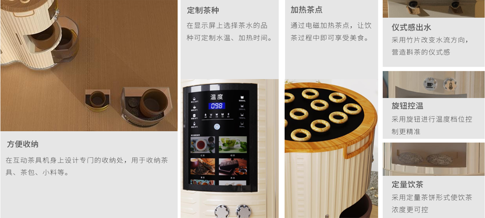
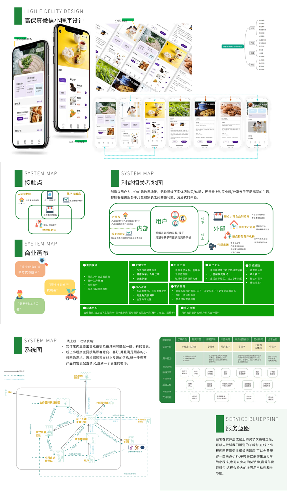

漫卷茶香 | Tea product service system for parent-child
The epidemic has changed people's way of life and concept of life. Health, companionship and good parent-child relationships are also valued.
Starting from enhancing parent-child relationship and creating a harmonious family atmosphere, the team designed a parent-child interactive tea set based on the traditional Chinese tea culture.
Preliminary User Survey
In the preliminary design investigation, the team firstly determined the prospect and value of the product from the design background and market investigation.
Through the investigation, it is found that the market prospect of parent-child interaction products is good and that drinking tea is not only a traditional Chinese culture, but also beneficial to health. Under the influence of COVID-19, staying at home for a long time has a certain negative impact on people's psychology, and the parent-child relationship between some families is tense.
Then we further explored the demand points of product pain points through questionnaires and interviews, and sorted the pain points and demand points into product function points, and also determined user portraits.
Finally, through the analysis of the Kano questionnaire, the function points are classified and sorted, and the necessary and attractive needs are obtained.
Product Design & Wechat High-Fidelity Mini Program Design & Service Blueprint & System Diagram
The tea set integrates the functions of tea cup storage, tea cooking, refreshment heating, and quantitative healthy tea drinking. In terms of product design, tea is connected on both sides, and the design of one large and one small allows children and parents to drink tea at the same time and enhance their relationship.
In the way of drinking tea, tea cakes are used instead of traditional tea leaves, together with refreshments and tea seasonings. Users can quantitatively configure the concentration and taste of tea according to their needs, so that the good experience of taste can be preserved and shared.
At the same time, the tea set is equipped with a small program, which can realize the purchase of tea cakes with different flavors, the purchase of refreshment condiments, and the sharing of tea recipes, which enhances the user viscosity of parent-child interactive tea sets, and is more sustainable in business.
Group members: Ketong Xu , Jing Liu , Zeyuan Liu , Ruyi Chen Instructor: Dr. Shaohua Han